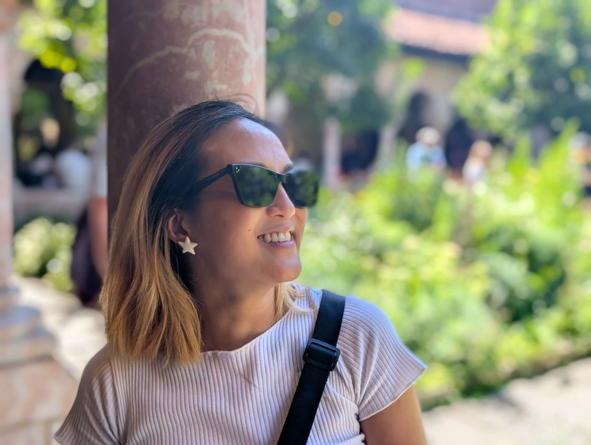

I’ve built companies, backed them, and sat in the hard conversations inside them.
I founded AdmitSee and ran it as CEO for eight years. Since 2018 I’ve been a Venture Partner at Pioneer Fund, and from 2022 to 2026 I led programming and startup advising at NYU Stern’s Berkley Center for Entrepreneurship. I trained as a lawyer before any of that.
Across all of it, the companies that struggled rarely failed on the product. They failed on what the founders never said to each other. That is why I advise cofounding teams, why I trained as an Authentic Relating facilitator, and why I keep writing.
Outside work I’ve taught yoga, collected more hobbies than I can justify, and spent a lot of time on meditation retreats. I live in New York.

Both sides of the table
As the founder making the decisions, and as the investor and advisor watching hundreds of teams make them.
Founder
2022–nowThe SJS CollectiveLeadership and team consulting for founders and executives, and the home of SJS Founder Advisory.
Associate Director, Berkley Center for Entrepreneurship
2022–2026New York University, SternLed learning programs and startup advising for early and mid-stage founders. Ran the summer accelerator.
Venture Partner
2018–nowPioneer FundEvaluates and advises early-stage companies in consumer, e-commerce, education, careers and marketplaces.
Founder & CEO
2014–2022AdmitSeeA marketplace of crowdsourced college application files and advice for students, parents and counselors.
Authentic Relating facilitator
CertifiedAuthentic Relating Training (ART)Workshops on honest, present conversation. See Still Life.